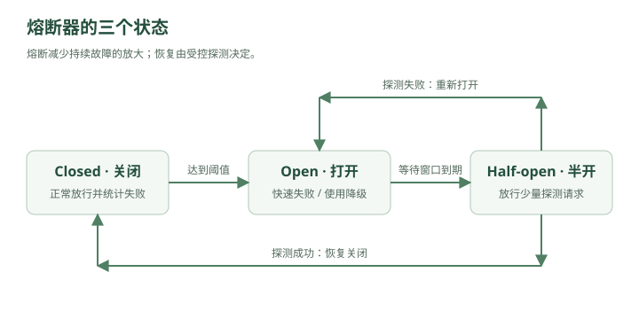

秒杀系统上线之后，林默觉得自己已经把洪峰挡住了。
现在请求链路大概是：
用户
↓
Load Balancer
↓
App
↓
Redis
↓
MQ
↓
Consumer
↓
MySQL
秒杀流量先经过 Redis。
抢到资格的请求才进入 MQ。
数据库终于不会被二百万人直接冲垮。
林默满意地看着监控：
Redis：正常
MQ：正常
MySQL：正常
然后老周突然问：
“Redis 能扛二百万请求，那你的 App 能吗？”
林默愣了一下。
是啊。
请求到 Redis 之前，首先得经过：
Nginx
↓
Spring Boot
↓
线程
↓
连接
↓
业务代码
也就是说，即使最终只有一万个请求进数据库——
前面的应用服务器还是要接住：
200 万个请求
老周说：
“数据库不死，不代表系统不死。”
一、第一道城门：不是所有请求都应该进入系统
晚上八点整。
秒杀开始。
2,000,000 用户
↓
同时点击
应用服务器瞬间：
连接数：暴涨
CPU：95%
线程池：满
GC：频繁
大量请求甚至还没访问 Redis，App 就已经开始变慢。
林默问：
“那继续加 App？”
老周摇头。
“你只有一万件商品。”
“这二百万个请求，真的都值得进入核心系统吗？”
林默突然意识到：
库存：10000
请求：2000000
99% 以上的人最终必然失败。
如果所有请求都完整执行：
鉴权
↓
查询活动
↓
查询商品
↓
查 Redis
↓
业务判断
本身就是浪费资源。
于是老周在系统最前面画了一扇门：
用户
↓
限流器
↓
系统
Rate Limiting
限流。
二、限流到底在限制什么？
假设系统安全承受：
10,000 QPS
现在来了：
100,000 QPS
如果全部放进去：
100000
↓
系统
↓
崩溃
结果是：
10万人全部失败
但如果限流：
100000
↓
限流器
↓
放 10000
拒绝 90000
那么至少：
10000 请求正常工作
所以限流的核心思想很反直觉：
为了让系统活下来，要主动拒绝一部分请求。
老周说：
“成熟的系统，不是永远不拒绝请求。”
“而是知道什么时候必须拒绝。”
三、为什么拒绝反而更好？
林默一开始还是有点接受不了。
“用户请求来了，我怎么能拒绝？”
老周问：
“如果你不拒绝，会发生什么？”
假设正常接口：
响应时间：50ms
超载之后：
50ms
↓
300ms
↓
2s
↓
10s
线程越来越多。
连接池越来越满。
最终：
所有请求 timeout
于是：
不拒绝
=
最后所有人都用不了
而限流：
一部分用户 → 正常服务
另一部分用户 → 快速失败
例如直接返回：
429 Too Many Requests
用户至少马上知道：
“系统繁忙，请稍后再试。”
而不是：
转圈 30 秒
↓
timeout
四、第一个限流算法：固定窗口
老周在白板画：
12:00:00 ~ 12:00:01
最多 100 个请求
12:00:01 ~ 12:00:02
最多 100 个请求
这叫：
Fixed Window
固定窗口。
实现非常简单。
Redis 里：
rate:user:9527:12:00:00 = 37
每来一个请求：
INCR
超过：
100
拒绝。
窗口结束：
计数重新开始
林默：
“这不是挺好吗？”
老周：
“边界。”
五、固定窗口的边界问题
假设限制：
每秒 100 请求
第一秒最后 100ms：
00.900 ~ 01.000
来了 100 个
下一秒最前 100ms：
01.000 ~ 01.100
又来了 100 个
两个窗口都没超过：
100
但实际上在：
200ms
内来了：
200 请求
瞬时流量：
1000 QPS
虽然规则写着：
100 QPS
林默：
“因为窗口边缘被钻空子了。”
对。
这就是固定窗口的问题。
六、滑动窗口
于是老周把窗口变成：
永远统计过去 1 秒
当前时间：
12:00:01.500
统计范围：
12:00:00.500
~
12:00:01.500
下一刻：
12:00:01.600
统计范围也跟着移动：
12:00:00.600
~
12:00:01.600
这就是：
Sliding Window
滑动窗口。
它比固定窗口更加平滑。
但代价也来了：
需要记录更多时间信息
实现更复杂
空间成本更高
又一次：
精确性提高，复杂度也提高。
七、漏桶：无论外面多疯狂，我都匀速放行
老周拿起一个水桶。
上面不断倒水：
↓↓↓↓↓↓↓↓↓↓
┌─────────┐
│ 水桶 │
└────┬────┘
↓
固定速度
这就是：
Leaky Bucket
漏桶算法。
请求进入桶。
桶底以固定速度处理：
100 req/s
外面即使突然：
10000 req/s
下游看到的仍然：
100 req/s
如果桶满了：
新请求丢弃
非常适合：
把不稳定流量整形成稳定流量。
林默说：
“有点像 MQ。”
“对。”
漏桶和 MQ 的直觉很像：
先排队
↓
稳定输出
八、但漏桶有个问题
假设系统空闲了十分钟。
突然来：
500 个请求
而系统其实完全有能力瞬间处理。
漏桶仍然：
100/s
慢慢放。
也就是说：
它对突发流量过于严格。
于是另一个算法出现：
Token Bucket
令牌桶。
九、令牌桶
想象系统里有一个桶。
不是放请求。
而是放：
令牌
系统按照固定速度产生：
每秒 100 个 Token
桶最多存：
500 个
请求来了：
有 Token
→ 拿一个
→ 放行
没有 Token：
拒绝 / 等待
如果系统之前很闲：
桶里攒了 500 Token
突然来了：
500 个请求
可以瞬间全部通过。
然后重新回到：
100/s
所以令牌桶既能限制：
长期平均速率
又允许：
一定程度的瞬时突发
这就是它特别常见的原因。
十、四种限流算法终于不用死背
林默写下：
固定窗口
→ 最简单
→ 有窗口边界问题
滑动窗口
→ 更精确
→ 成本更高
漏桶
→ 强制稳定输出
→ 不喜欢突发
令牌桶
→ 控制平均速率
→ 允许一定突发
如果面试官问：
“为什么令牌桶比漏桶更适合很多 API 限流？”
可以回答：
因为令牌桶限制长期平均速率的同时允许消耗预先积累的令牌处理短时突发流量，而漏桶更强调固定速率输出，流量整形更严格。
十一、到底对谁限流？
林默原本以为：
全系统 10000 QPS
就完了。
老周问：
“如果一个用户自己打 10000 QPS 呢？”
于是限流可以有很多维度。
按：
用户
IP
接口
租户
API Key
设备
业务类型
例如：
登录接口：
同一 IP 每分钟 30 次
普通 API：
单用户 100 QPS
支付接口：
更严格
整个系统：
最大 50000 QPS
这叫：
分层限流。
因为不同资源的成本不同。
十二、越贵的操作，限流应该越早
比如请求流程：
请求
↓
JWT 校验
↓
数据库查询
↓
大模型调用
↓
第三方支付
假设一次大模型调用：
成本 0.1 元
一个攻击者打：
10000 次
如果你在大模型调用之后才判断限流——
已经晚了。
所以又出现那条原则：
便宜的拒绝，要尽量放在昂贵操作之前。
例如：
CDN
↓
WAF
↓
Gateway 限流
↓
应用
↓
缓存
↓
数据库
↓
外部服务
越往后越贵。
十三、限流解决了入口，系统内部又炸了
几周后。
秒杀已经稳定。
但一天上午，短信服务出现故障。
正常链路：
订单服务
↓
用户服务
↓
优惠券服务
↓
支付服务
↓
短信服务
短信服务平时：
20ms
今天突然：
10 秒
订单服务每发一次请求：
等待...
等待...
等待...
线程越来越多。
十四、一个小服务为什么能拖死整个系统？
假设订单服务线程池：
200 threads
每个短信请求正常：
20ms
理论上处理很快。
但短信服务变成：
10s
于是一个请求占一个线程：
10 秒
很快：
200 个线程全部卡住
新的订单请求：
进不来
于是订单服务也开始 timeout。
调用订单服务的上游：
也开始等待
于是故障像多米诺骨牌：
短信服务挂
↓
订单服务卡
↓
商城服务卡
↓
网关线程堆积
↓
整个系统挂
这叫：
服务雪崩
Cascading Failure。
十五、注意：这和缓存雪崩不是一回事
之前学过：
缓存雪崩
=
大量缓存同时失效
↓
请求打数据库
这里的：
服务雪崩
=
一个下游故障
↓
故障沿调用链扩散
↓
拖死大量服务
都叫“雪崩”，但场景不同。
共同点是：
局部故障扩散成全局故障。
十六、罪魁祸首之一：没有超时
林默看代码：
httpClient.callSmsService();
默认超时：
30 秒
老周问：
“用户愿意为一条短信等 30 秒？”
显然不愿意。
于是第一道保护：
Timeout
超时。
比如：
短信服务：
300ms 没返回
↓
直接认为失败
不要无限等待。
因为：
等待本身就在占资源。
线程、连接、内存，全都在消耗。
十七、但是超时后重试，不就行了吗？
林默：
“那失败了我重试三次。”
老周马上说：
“先别急。”
假设正常流量：
10000 QPS
下游故障。
每个请求重试：
3 次
那么下游实际收到：
40000 QPS
原本就已经扛不住。
你又给它：
4 倍流量
这叫：
Retry Storm
重试风暴。
十八、重试不是不能用，而是不能无脑用
合理的重试通常需要：
限制次数
+
指数退避
+
随机抖动
比如：
第一次失败：
100ms 后重试
第二次：
200ms
第三次：
400ms
而不是：
失败
↓
立刻
失败
↓
立刻
失败
↓
立刻
这叫：
Exponential Backoff
指数退避。
再加随机：
100ms ± random
叫：
Jitter
抖动。
十九、为什么需要 Jitter？
假设 10 万个客户端同时失败。
全部严格：
1 秒后重试
那么一秒后：
10 万请求
再次同时冲进来。
像军队整齐冲锋。
再失败：
2 秒后
又一起冲锋。
所以加随机：
800ms
932ms
1044ms
1170ms
...
把重试打散。
避免：
Thundering Herd
惊群效应。
二十、但是如果短信服务已经彻底挂了呢？
林默设置：
300ms timeout
3 次重试
可短信服务已经完全不可用。
那么每一个订单请求还是会：
失败
↓
重试
↓
失败
↓
重试
↓
失败
大量浪费资源。
老周说：
“既然已经知道它挂了，为什么还每次都去试？”
于是系统设计里一个经典组件登场：
Circuit Breaker
熔断器。
二十一、电路为什么需要保险丝？
家里电器短路。
如果继续通电：
电流越来越大
↓
线路发热
↓
起火
所以保险丝：
发现异常
↓
直接断开电路
系统也是。
如果下游连续失败：
短信服务
失败
失败
失败
失败
熔断器判断：
“这服务大概率挂了。”
于是：
暂时不再调用
直接快速失败。
二十二、熔断器的三个状态
最经典的是：

查看文字版示意
CLOSED
OPEN
HALF_OPEN
正常情况下：
CLOSED
请求
↓
正常调用下游
Circuit 是“闭合”的。
如果失败率超过阈值：
最近 100 次
60 次失败
变成：
OPEN
请求
↓
直接失败
根本不访问下游。
这就是：
熔断。
过一段时间：
30 秒
不能永远断着。
所以进入：
HALF_OPEN
半开状态。
先放少量探测请求：
1 个
5 个
10 个
如果成功：
下游恢复了
↓
CLOSED
如果继续失败：
重新 OPEN
二十三、熔断保护的是谁？
林默本来以为：
“保护下游？”
老周说：
“也保护你自己。”
如果下游挂了还疯狂请求：
你的线程被占
你的连接被占
你的 CPU 被重试占
所以熔断器同时保护：
下游
+
调用方
避免：
一处故障
↓
整个系统跟着死
二十四、熔断以后，用户怎么办？
假设短信服务 OPEN。
难道所有下单都返回：
500
吗？
林默想了想：
“用户买东西，其实不一定非要马上收到短信。”
老周：
“对。”
于是：
降级
Degradation。
正常：
下单成功
↓
发送短信
短信挂：
下单成功
↓
短信暂时跳过
↓
稍后补发
核心业务仍然继续。
这就是：
牺牲非核心功能，保护核心功能。
二十五、什么叫核心功能？
电商大促的时候：
核心：
登录
商品浏览
下单
支付
库存
非核心可能包括：
推荐
评论
排行榜
个性化头像
积分实时更新
短信立即送达
如果系统压力极大，可以临时：
关闭推荐
↓
关闭实时排行榜
↓
评论只读
↓
部分统计延迟
把机器资源集中给：
下单和支付
这就是：
服务降级
二十六、降级和熔断有什么区别？
这是面试特别容易混的。
林默写：
熔断
关注：
下游已经不健康
所以：
暂时停止调用它
例如：
短信服务连续失败
↓
不再访问短信服务
降级
关注：
业务功能可以牺牲
所以：
给一个简化结果
比如：
推荐服务挂了
↓
返回默认热门商品
或者：
评论系统压力过大
↓
暂时只展示旧数据
所以：
熔断是一种故障保护机制。
降级是一种业务取舍。
两者经常一起使用。
二十七、Fallback
熔断之后，总不能什么都不给。
所以经常设计：
Fallback
兜底。
比如：
推荐服务正常
↓
个性化推荐
挂了：
Fallback
↓
热门商品
用户画像挂了：
Fallback
↓
默认头像 + 默认昵称
商品评分服务挂了：
Fallback
↓
暂时不显示评分
原则：
不是所有失败都必须让整个请求失败。
二十八、然后又出现一个问题：线程池共享
订单服务有：
200 个线程
调用：
支付
短信
积分
推荐
全都用同一个线程池。
某天推荐服务巨慢。
大量线程卡在：
推荐服务
结果支付请求来了，却发现：
没有线程
于是：
推荐服务故障
↓
竟然把支付也拖死
老周写：
Isolation
隔离。
二十九、隔离：别让一个坏邻居占光资源
比如分别设置：
支付线程池：100
短信线程池：30
推荐线程池：30
其他：40
即使推荐：
30 个线程全部卡死
支付还有：
100 个线程
这叫：
Bulkhead Pattern
舱壁模式。
名字来自轮船。
三十、为什么叫舱壁？
一艘船如果内部完全连通。
某处破洞：
水灌进来
↓
整个船舱进水
↓
沉船
如果分隔成：
舱 A
舱 B
舱 C
舱 D
A 破了：
只淹 A
其他舱还能保持浮力。
分布式系统也是：
资源隔离
线程池隔离
连接池隔离
实例隔离
租户隔离
核心目的：
让故障有边界。
三十一、这句话非常重要：故障不可避免，但可以隔离
老周说：
“大型系统真正追求的，不是永远不出故障。”
林默：
“那追求什么？”
“故障发生以后，别扩散。”
比如：
推荐挂
最好结果：
推荐不可用
而不是：
推荐挂
↓
订单挂
↓
支付挂
↓
整个网站挂
系统设计里的：
限流
熔断
隔离
降级
本质上都在做同一件事：
控制故障半径
Blast Radius。
三十二、入口保护的完整链路
林默重新设计系统：
Internet
↓
CDN / WAF
↓
Gateway
↓
限流
↓
鉴权
↓
App
↓
下游服务
当系统正常：
全部功能开放
高峰：
限流
部分服务变慢：
Timeout
持续失败：
Circuit Breaker
非核心服务故障：
Fallback / Degradation
防止影响其他模块：
Isolation
这一套组合起来，就是系统稳定性的基本防线。
三十三、一次真正的事故演练
老周突然说：
“假设支付服务现在变慢，你告诉我系统会怎么死。”
林默开始推演。
正常：
用户
↓
订单服务
↓
支付服务
支付服务耗时：
50ms
突然数据库锁竞争。
变成：
5s
第一步：
支付请求大量堆积
第二步：
订单线程等待支付
第三步：
订单线程池耗尽
第四步：
新订单无法处理
第五步：
客户端 timeout
第六步：
客户端自动重试：
流量翻倍
第七步：
支付更加慢
形成正反馈：
越慢
↓
请求越积压
↓
重试越多
↓
更慢
最终：
雪崩
三十四、怎么阻止这条链路？
林默重新推演。
支付开始变慢。
第一层
Timeout = 500ms
不要卡 5 秒。
第二层
重试：
最多 1~2 次
指数退避 + Jitter
第三层
失败率持续升高：
Circuit Breaker OPEN
停止继续攻击支付服务。
第四层
支付线程池独立：
不占光订单服务所有线程
第五层
入口限流：
减少新请求
第六层
降级：
非支付核心功能关闭
系统虽然受损：
部分支付失败
但不会：
整个网站一起挂
老周点头。
“这才叫稳定性设计。”
三十五、限流、熔断、降级、隔离终于串起来了
不要把它们当四个孤立八股。
真正关系是：
请求太多
↓
限流
下游太慢
↓
Timeout
下游持续失败
↓
熔断
部分功能可以牺牲
↓
降级
防止一个模块拖死其他模块
↓
隔离
共同目标：
防止系统雪崩
三十六、系统设计开始出现一个更深的原则
林默看着现在的架构：
用户
↓
Gateway
↓
Rate Limiter
↓
App
↓
Circuit Breaker
↓
Service
↓
Redis / MQ / DB
突然问：
“我们是不是一直在承认一件事情？”
老周：
“什么？”
林默说：
“系统里的任何东西，都可能挂。”
Redis 会挂。
MySQL 会挂。
MQ 会挂。
支付会挂。
网络会挂。
机器会挂。
老周笑了。
“欢迎真正进入分布式系统。”
系统设计不是假设：
一切正常
然后设计最快的路径。
而是：
正常时怎么跑
+
异常时怎么活
这两个问题同样重要。
第六章结束
这一章的核心因果链：
流量太大
↓
App 也会被冲垮
↓
限流
↓
固定窗口 / 滑动窗口
↓
漏桶 / 令牌桶
↓
主动拒绝部分请求
↓
下游服务变慢
↓
Timeout
↓
无脑重试造成 Retry Storm
↓
指数退避 + Jitter
↓
下游持续失败
↓
Circuit Breaker
↓
OPEN / HALF_OPEN / CLOSED
↓
非核心功能舍弃
↓
降级 + Fallback
↓
共享资源导致故障扩散
↓
隔离 / Bulkhead
↓
最终目标：防止服务雪崩
现在如果面试官问：
“上游 1 万并发，但下游大模型接口最多只能承受 500 并发，你怎么设计？”
你的思路就不应该只有之前的：
MQ 削峰
而应该开始分情况：
如果请求允许异步，可以用 MQ 削峰，让下游按自身吞吐稳定消费；如果是必须同步返回的请求，则要在入口做限流和并发控制，超过系统容量的请求快速失败或排队。同时设置合理超时，避免连接长期占用；对于持续异常的下游启用熔断，防止故障扩散；非核心功能可以降级。如果需要重试，则限制次数，并配合指数退避和随机抖动，避免形成重试风暴。
这已经是一个相当完整的系统设计回答框架了。
下一章我们该解决另外一个越来越明显的问题：
下一章：服务器明明在北京，为什么广州用户打开图片要两秒？——CDN、DNS 与静态资源
会开始把系统从“服务器内部”拉到整个互联网：
DNS 怎么找到服务器 → CDN 为什么快 → 边缘节点 → 回源 → Cache-Control → 静态资源与动态请求 → CDN 缓存一致性 → 多地域部署 → 就近访问。